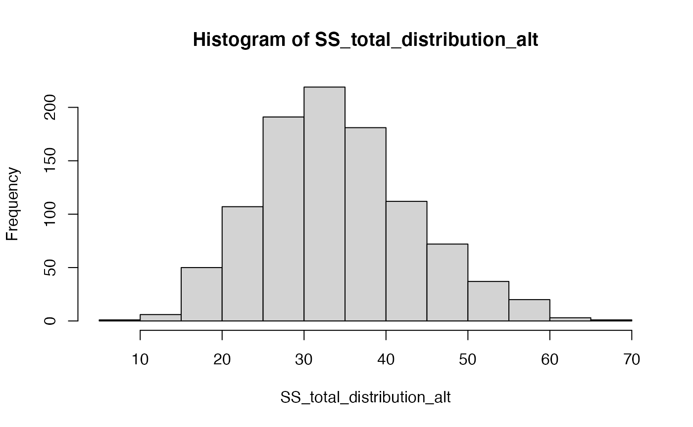
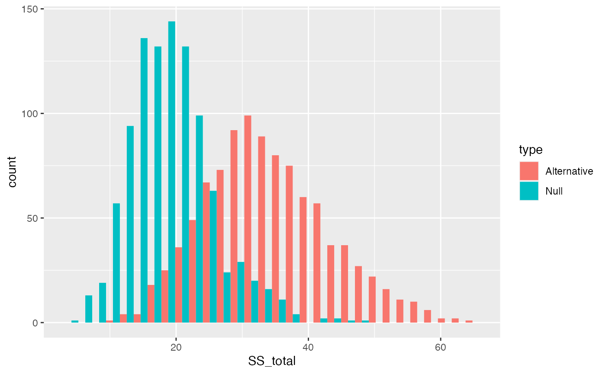
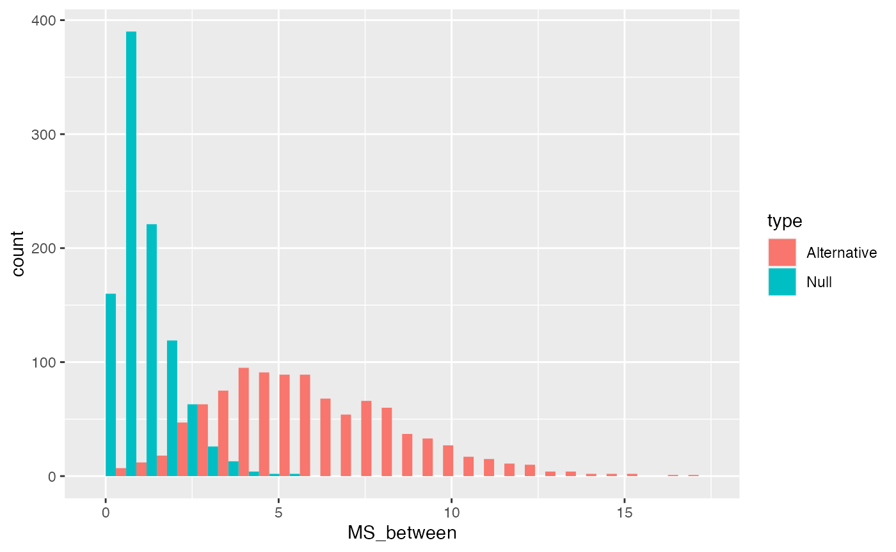
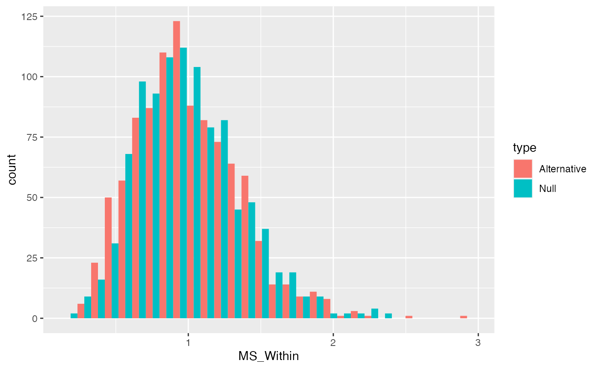
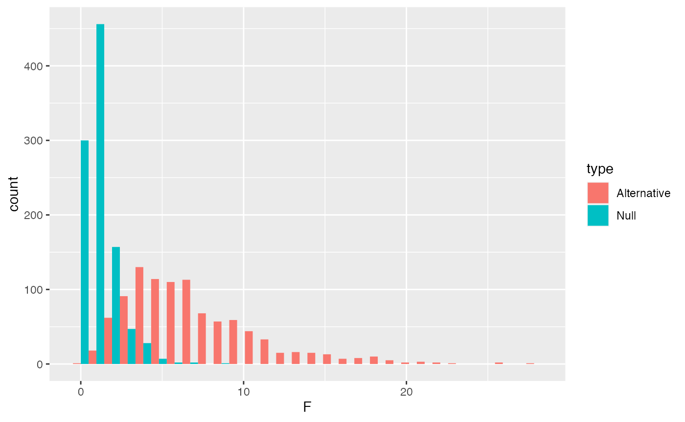
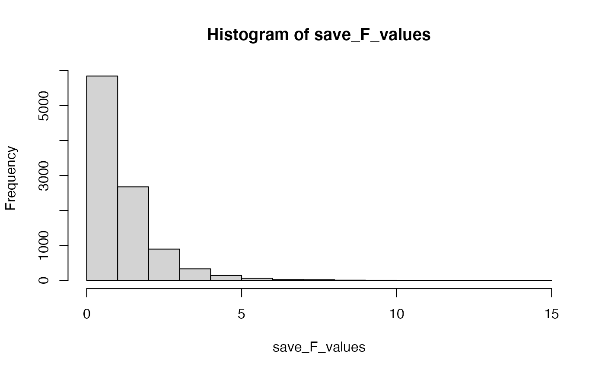
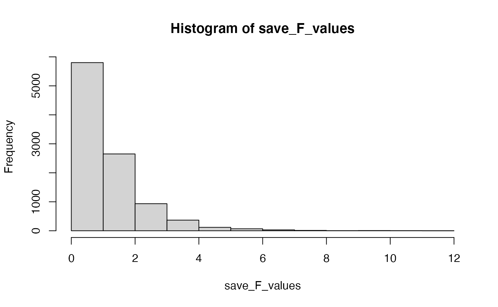

Lab 4 ANOVA
Matthew J. C. Crump
2/1/2021
Lab4_ANOVA.RmdReadings
Chapters 7 and 8 from (Abdi et al., 2009). You can also check out my chapter on ANOVA (Crump et al., 2018) here https://crumplab.github.io/statistics/anova.html.
Overview
The next three weeks discuss one-factor Analysis of Variance (ANOVA). We can think of ANOVA as an extension of the t-test idea, that can be applied to designs where the independent variable (IV) has more than two levels, or to even more complicated designs involving multiple IVs (possibly with many levels each).
We begin with the one-factor ANOVA for designs with a single independent variable that has two or more levels. As we will see shortly, if we use ANOVA for a design with two levels, the result will be the same as a t-test. However, unlike a t-test, we can also use the ANOVA for designs with more than two levels.
This lab has three major concept sections to help firm up ANOVA concepts, and a practical section on using the aov function to compute ANOVAs in R.
Let’s consider a few pictures first, and then move onto the lab:


Practical 1: By hand ANOVA using R
library(tibble) romeo_juliet <- tibble(subjects = 1:20, Group = rep(c("No Context", "Context Before", "Context After", "Partial Context"), each = 5), Comprehension = c(3,3,2,4,3, 5,9,8,4,9, 2,4,5,4,1, 5,4,3,5,4 ) ) romeo_juliet$Group <- factor(romeo_juliet$Group, levels = c("No Context", "Context Before", "Context After", "Partial Context")) knitr::kable(romeo_juliet)
| subjects | Group | Comprehension |
|---|---|---|
| 1 | No Context | 3 |
| 2 | No Context | 3 |
| 3 | No Context | 2 |
| 4 | No Context | 4 |
| 5 | No Context | 3 |
| 6 | Context Before | 5 |
| 7 | Context Before | 9 |
| 8 | Context Before | 8 |
| 9 | Context Before | 4 |
| 10 | Context Before | 9 |
| 11 | Context After | 2 |
| 12 | Context After | 4 |
| 13 | Context After | 5 |
| 14 | Context After | 4 |
| 15 | Context After | 1 |
| 16 | Partial Context | 5 |
| 17 | Partial Context | 4 |
| 18 | Partial Context | 3 |
| 19 | Partial Context | 5 |
| 20 | Partial Context | 4 |
Grand Mean and total sums of squares
library(dplyr) # get grand mean grand_mean <- mean(romeo_juliet$Comprehension) # get squared deviations from grand mean SS_total_table <- romeo_juliet %>% mutate(grand_mean = mean(romeo_juliet$Comprehension)) %>% mutate(deviations = Comprehension - grand_mean, sq_deviations = (Comprehension - grand_mean)^2) #sum them SS_total <- sum(SS_total_table$sq_deviations)
SS Between
# get group means group_means <- romeo_juliet %>% group_by(Group) %>% summarize(mean_Comprehension = mean(Comprehension),.groups = 'drop') # get squared deviations between grand mean and group means SS_between_table <- romeo_juliet %>% mutate(grand_mean = mean(romeo_juliet$Comprehension), group_means = rep(group_means$mean_Comprehension, each = 5)) %>% mutate(deviations = group_means - grand_mean, sq_deviations = (group_means - grand_mean)^2) SS_between <- sum(SS_between_table$sq_deviations)
SS Within
# get group means group_means <- romeo_juliet %>% group_by(Group) %>% summarize(mean_Comprehension = mean(Comprehension), .groups = 'drop') # get squared deviations between group means and original data points SS_within_table <- romeo_juliet %>% mutate(group_means = rep(group_means$mean_Comprehension, each = 5)) %>% mutate(deviations = group_means - Comprehension, sq_deviations = (group_means - Comprehension)^2) SS_within <- sum(SS_within_table$sq_deviations)
Check that SS total = SS Between + SS Within:
SS_total #> [1] 88.55 SS_between+SS_within #> [1] 88.55 SS_total == SS_between+SS_within #> [1] TRUE
F is a ratio of variances
# Between groups variance dfb <- 4-1 MS_Between <- SS_between/dfb # Within groups variance dfw <- 20-4 MS_Within <- SS_within/dfw # compute F, a ratio of variances F_ratio <- MS_Between/MS_Within
Alternative example using matrix
# represent data in a wide-format matrix matrix_data <- matrix(c(3,3,2,4,3, 5,9,8,4,9, 2,4,5,4,1, 5,4,3,5,4), ncol=4, nrow=5) colnames(matrix_data) <- c("No Context", "Context Before", "Context After", "Partial Context") ## Sums of Squares SS_total <- sum( (matrix_data - mean(matrix_data))^2 ) SS_between <- sum( (colMeans(matrix_data) - mean(matrix_data))^2 )*5 SS_within <- sum( (colMeans(matrix_data) - t(matrix_data))^2 ) ## Mean squared errors dfb <- 4-1 MS_Between <- SS_between/dfb dfw <- 20-4 MS_Within <- SS_within/dfw # compute F, a ratio of variances F_ratio <- MS_Between/MS_Within
Concept 1: Understanding the pieces of the ANOVA table
Most of the pieces of the ANOVA table (degrees of freedom, Sums of Squares, Mean squared error, and the F-value) are computed directly from the data. Algebraically, the Mean squared errors are the sum squares of divided by their respective degrees of freedoms. And, the F-value is a ratio: the Mean squared error for the group (Between) divided by the mean squared error for the residuals (Within). The p-value does not come from the data, in this case it comes from an F-distribution. This concept section is followed by a section on creating a simulated F-distribution. To prepare us for that concept, we will first focus on the pieces of the ANOVA table, and examine how each piece ought to behave in the context of experimental designs. Specifically, we will ask how each term ought to behave if the Null hypothesis is true as well as if it isn’t.
In the textbook “Romeo & Juliet” example, the example data had 4 groups, and 5 observations per condition. The empirical question was whether the group manipulation caused changes in the means. The ANOVA was applied to that data set and a large F-value was found. This F-value was unlikely to be produced by the null-hypothesis, so that hypothesis was rejected. We will continue with this basic example, but examine it from a slightly more abstract perspective. We will ask how each of the terms in the ANOVA for this design out to behave if the Null is true, and if the Null is not true.
SS Total
If the null is TRUE, then all of the individual subject means in all of the groups, are all assumed to be randomly sampled from the very same normal distribution. For example, this could be one random sample of 20 subject means for the above design. We will use a unit normal distribution throughout.
\(\text{SS}_\text{Total}\) is the sum of squared deviations between the grand mean (mean of all the data) and each data point. Assuming we are sampling from a unit normal distribution, how should \(\text{SS}_\text{Total}\) behave if the Null hypothesis is true?
We can compute \(\text{SS}_\text{Total}\) for the simulated data from above.
But, that is just what \(\text{SS}_\text{Total}\) happens to look like for that one random sample of 20 values from the normal distribution. Under the null, every time we sample 20 values we would expect slightly different values for \(\text{SS}_\text{Total}\). Let’s generate the sampling distribution of \(\text{SS}_\text{Total}\). We would expect \(\text{SS}_\text{Total}\) to take on a value from this distribution if the Null is TRUE.
SS_total_distribution <- c() for(i in 1:1000){ sim_data <- matrix(rnorm(20,0,1),ncol=4,nrow=5) SS_total <- sum( (mean(sim_data) - sim_data)^2 ) SS_total_distribution[i] <- SS_total } hist(SS_total_distribution)
What would happen to \(\text{SS}_\text{Total}\) is the Null hypothesis is false? There are an infinity of ways that the null hypothesis could be false, but let’s simulate one of them to see what could happen to \(\text{SS}_\text{Total}\).
Specifically, let’s imagine that manipulation works and it cause the first group to have a shifted mean of two standard deviations compared to the other groups.
SS_total_distribution_alt <- c() for(i in 1:1000){ sim_data <- matrix(rnorm(20,0,1),ncol=4,nrow=5) sim_data[,1] <- sim_data[,1]+2 #add effect for group 1 SS_total <- sum( (mean(sim_data) - sim_data)^2 ) SS_total_distribution_alt[i] <- SS_total } hist(SS_total_distribution_alt)

The distribution of \(\text{SS}_\text{Total}\) includes a smaller range values when the Null is TRUE, compared to distribution of \(\text{SS}_\text{Total}\) for this one alternative scenario. The big concept here is that a manipulation that causes changes in the means, should increase the overall variance in the data relative to the grand mean. Thus, \(\text{SS}_\text{Total}\) should tend to be larger when the null is false, compared to when it is true.
library(ggplot2) SS_total_data <- data.frame(SS_total = c(SS_total_distribution, SS_total_distribution_alt), type = rep(c("Null","Alternative"), each=1000)) ggplot(SS_total_data, aes(x=SS_total, group=type, fill=type))+ geom_histogram(position="dodge")

SS Between
\(\text{SS}_\text{Between}\) treats each score as if it was the group mean, and sums the squared deviations between the group mean and grand mean. According to the null, the group means should all be the same (on average), but they will have some variance because of random sampling. Thus, we can simulate a sampling distribution of \(\text{SS}_\text{Between}\) that we would expect under the null.
SS_between_distribution <- c() for(i in 1:1000){ sim_data <- matrix(rnorm(20,0,1),ncol=4,nrow=5) SS_between <- sum( (mean(sim_data) - colMeans(sim_data))^2 )*5 SS_between_distribution[i] <- SS_between }
Let’s also create a distribution of \(\text{SS}_\text{Between}\) that would happen if our first group had a two standard deviation shift in the mean.
SS_between_distribution_alt <- c() for(i in 1:1000){ sim_data <- matrix(rnorm(20,0,1),ncol=4,nrow=5) sim_data[,1] <- sim_data[,1]+2 #add effect for group 1 SS_between <- sum( (mean(sim_data) - colMeans(sim_data))^2 )*5 SS_between_distribution_alt[i] <- SS_between }
It’s clear by plotting the distributions together that \(\text{SS}_\text{Between}\) will have larger numbers as the variation between the means gets larger.
SS_between_data <- data.frame(SS_between = c(SS_between_distribution, SS_between_distribution_alt), type = rep(c("Null","Alternative"), each=1000)) ggplot(SS_between_data, aes(x=SS_between, group=type, fill=type))+ geom_histogram(position="dodge")
SS Within
\(\text{SS}_\text{Within}\) sums the squared deviations between each score and its group mean. We can simulate a sampling distribution of \(\text{SS}_\text{Within}\) that we would expect under the null.
SS_Within_distribution <- c() for(i in 1:1000){ sim_data <- matrix(rnorm(20,0,1),ncol=4,nrow=5) SS_Within <- sum( (colMeans(sim_data) - t(sim_data))^2 ) SS_Within_distribution[i] <- SS_Within }
Let’s also create a distribution of \(\text{SS}_\text{Within}\) that would happen if our first group had a two standard deviation shift in the mean.
SS_Within_distribution_alt <- c() for(i in 1:1000){ sim_data <- matrix(rnorm(20,0,1),ncol=4,nrow=5) sim_data[,1] <- sim_data[,1]+2 #add effect for group 1 SS_Within <- sum( (colMeans(sim_data) - t(sim_data))^2) SS_Within_distribution_alt[i] <- SS_Within }
Remember, we have created an alternative distribution by violating the null with a shift in the mean for the first group. We did not assume the manipulation had any effect on the variances. Thus, \(\text{SS}_\text{Within}\) should be the same when the null is true or false (for mean shifts).
SS_Within_data <- data.frame(SS_Within = c(SS_Within_distribution, SS_Within_distribution_alt), type = rep(c("Null","Alternative"), each=1000)) ggplot(SS_Within_data, aes(x=SS_Within, group=type, fill=type))+ geom_histogram(position="dodge")
MS Between
\(\text{MS}_\text{Between}\) is a variance, and remember variances are average sums of squares. In our case, we are “estimating” the variance due to the effect of the manipulation, so we divide by the degrees of freedom \(\text{SS}_\text{Between}/df_B\).
There are four group means, and we are estimating them with respect to the grand mean, so the number of means free to vary are 4-1 = 3.
We can plot distributions of \(\text{MS}_\text{Between}\) that we would when the null is true, and when it is false (using our alternative example). We can re-use the \(\text{SS}_\text{Between}\) distributions and simply divide the values by \(df_B\).
MS_between_data <- data.frame(MS_between = c(SS_between_distribution/3, SS_between_distribution_alt/3), type = rep(c("Null","Alternative"), each=1000)) ggplot(MS_between_data, aes(x=MS_between, group=type, fill=type))+ geom_histogram(position="dodge")

MS Within
\(\text{MS}_\text{Within}\) represents average variation within group. ANOVA assumes manipulations only cause shifts in means, and from this perspective, \(\text{MS}_\text{Within}\) represents variance that is not due to the manipulation.
We are again “estimating” the variance so we divide by the degrees of freedom \(\text{SS}_\text{Within}/df_W\).
There are 20 subject means, and we are estimating them with respect to the four group means, so the number of means free to vary are 20-4 = 16.
We can plot distributions of \(\text{MS}_\text{Within}\) that we would expect when the null is true, and when it is false (using our alternative example). Again, we can re-use the \(\text{SS}_\text{Within}\) distributions and simply divide the values by \(df_W\).
MS_Within_data <- data.frame(MS_Within = c(SS_Within_distribution/16, SS_Within_distribution_alt/16), type = rep(c("Null","Alternative"), each=1000)) ggplot(MS_Within_data, aes(x=MS_Within, group=type, fill=type))+ geom_histogram(position="dodge")

F
The last component of the ANOVA table is \(F\), which is a ratio of the variances \(\text{MS}_\text{Between} / \text{MS}_\text{Within}\).
Let’s re-simulate the F-distribution we would expect under the null.
F_distribution <- c() for(i in 1:1000){ sim_data <- matrix(rnorm(20,0,1),ncol=4,nrow=5) SS_between <- sum( (mean(sim_data) - colMeans(sim_data))^2 )*5 SS_Within <- sum( (colMeans(sim_data) - t(sim_data))^2 ) sim_F <- (SS_between/3) / (SS_Within/16) F_distribution[i] <- sim_F }
And, re-simulate the F-distribution we would expect for our alternative (that group one has a mean shift of two standard deviations).
F_distribution_alt <- c() for(i in 1:1000){ sim_data <- matrix(rnorm(20,0,1),ncol=4,nrow=5) sim_data[,1] <- sim_data[,1]+2 #add effect for group 1 SS_between <- sum( (mean(sim_data) - colMeans(sim_data))^2 )*5 SS_Within <- sum( (colMeans(sim_data) - t(sim_data))^2 ) sim_F <- (SS_between/3) / (SS_Within/16) F_distribution_alt[i] <- sim_F }
And, then plot the F-distributions.
F_data <- data.frame(F = c(F_distribution, F_distribution_alt), type = rep(c("Null","Alternative"), each=1000)) ggplot(F_data, aes(x=F, group=type, fill=type))+ geom_histogram(position="dodge")

Concept 2: Simulating the F-distribution
Where did the p-value come from? We have seen that the aov function does all of the work of computing the degrees of freedom, the sums of squares, the mean squares and the F-value directly from the provided data frame. Remember, that the F-value is essentially a descriptive statistic. The summary function shows that this F-value is associated with a fairly small p-value (.00278). The aov function looks up the p-value using the F-distribution function.
?pf pf(7.227,3,16, lower.tail = FALSE) #> [1] 0.002782149
However, where did the F distribution come from? The F distribution is just another sampling distribution. It is a hypothetical distribution of F values that would be obtained under the null hypothesis for this situation. We can obtain our own F-distribution using monte-carlo simulation. Let’s see if we get clsoe.
# replace the example data with random numbers from a unit normal romeo_juliet$Comprehension <- rnorm(20,0,1) aov.out <- aov(Comprehension ~ Group, data = romeo_juliet) simulated_F <- summary(aov.out)[[1]]$`F value`[1] # do the above a bunch of times save_F_values <- length(100) for(i in 1:100){ romeo_juliet$Comprehension <- rnorm(20,0,1) aov.out <- aov(Comprehension ~ Group, data = romeo_juliet) simulated_F <- summary(aov.out)[[1]]$`F value`[1] save_F_values[i] <- simulated_F } # look at the F distribution hist(save_F_values)

# get the p-value associated with 7.22 length(save_F_values[save_F_values>7.22])/length(save_F_values) #> [1] 0 # do the above 10000 times save_F_values <- length(10000) for(i in 1:10000){ romeo_juliet$Comprehension <- rnorm(20,0,1) aov.out <- aov(Comprehension ~ Group, data = romeo_juliet) simulated_F <- summary(aov.out)[[1]]$`F value`[1] save_F_values[i] <- simulated_F } # look at the F distribution hist(save_F_values)

Practical 2: One-way ANOVA with aov function
We will use the aov() function many times throughout the remainder of this course to perform various ANOVAs. This is a very brief practical section to show you a few bells and whistles useful for conducting ANOVAs in R.
We will continue to use the same example data from the textbook:
romeo_juliet <- tibble(subjects = 1:20, Group = rep(c("No Context", "Context Before", "Context After", "Partial Context"), each = 5), Comprehension = c(3,3,2,4,3, 5,9,8,4,9, 2,4,5,4,1, 5,4,3,5,4 ) ) romeo_juliet$Group <- factor(romeo_juliet$Group, levels = c("No Context", "Context Before", "Context After", "Partial Context"))
aov()
The aov() function has two main inputs, the formula (Comprehension ~ Group), and the data frame (data = romeo_juliet). The dataframe must be organized in long-format.
The column name of the dependent variable (Comprehension) is placed on the left side of the ~, and the column name of the factor (independent variable) is placed on the right (Group). So the formula Comprehension ~ Group can be read as, “analyze the means of Comprehension as a function of the levels of Group.”
anova.out <- aov(Comprehension ~ Group, data = romeo_juliet)
The aov() function produces a list object containing the pieces of the ANOVA model. Printing this to the console usually does not give you information you are looking for:
anova.out #> Call: #> aov(formula = Comprehension ~ Group, data = romeo_juliet) #> #> Terms: #> Group Residuals #> Sum of Squares 50.95 37.60 #> Deg. of Freedom 3 16 #> #> Residual standard error: 1.532971 #> Estimated effects may be unbalanced
summary()
The ANOVA table can be printed to the console using summary(). The summary() function takes an aov() model as it’s input, and returns the ANOVA table as an output.
summary(anova.out) #> Df Sum Sq Mean Sq F value Pr(>F) #> Group 3 50.95 16.98 7.227 0.00278 ** #> Residuals 16 37.60 2.35 #> --- #> Signif. codes: 0 '***' 0.001 '**' 0.01 '*' 0.05 '.' 0.1 ' ' 1
You could also write this as:
model.tables()
Another helpful function is model.table(), which extracts the means of each level in the analysis (from the aov() object), and prints them to the console.
model.tables(anova.out) #> Tables of effects #> #> Group #> Group #> No Context Context Before Context After Partial Context #> -1.35 2.65 -1.15 -0.15
Extracting model terms
In practice, you might use aov(), summary(), and model.tables() to quickly print out an ANOVA and look at it. For example, let’s I wanted to run an ANOVA on the example data and look at it in R, I could do this:
anova.out <- aov(Comprehension ~ Group, data = romeo_juliet) summary(anova.out) #> Df Sum Sq Mean Sq F value Pr(>F) #> Group 3 50.95 16.98 7.227 0.00278 ** #> Residuals 16 37.60 2.35 #> --- #> Signif. codes: 0 '***' 0.001 '**' 0.01 '*' 0.05 '.' 0.1 ' ' 1 model.tables(anova.out) #> Tables of effects #> #> Group #> Group #> No Context Context Before Context After Partial Context #> -1.35 2.65 -1.15 -0.15
Great, but what if I wanted to access specific values in the ANOV table. You can extract these values by finding the correct indices into the list objects generated by aov() and summary().
my_summary <- summary(anova.out) my_summary[[1]]$Df #> [1] 3 16 my_summary[[1]]$`Sum Sq` #> [1] 50.95 37.60 my_summary[[1]]$`Mean Sq` #> [1] 16.98333 2.35000 my_summary[[1]]$`F value` #> [1] 7.22695 NA my_summary[[1]]$`Pr(>F)` #> [1] 0.002782234 NA
You could use the above strategy to help you insert specific values into your R markdown document.
Reporting with papaja
The papaja package has many useful functions that allow you to extract pieces of the ANOVA that you want to report in a document, such as in a results section.
Check out all of the reporting options you have by using apa_print(), and inputting an ANOVA object.
library(papaja) apa_print(anova.out) #> $estimate #> $estimate$Group #> [1] "$\\hat{\\eta}^2_G = .575$" #> #> #> $statistic #> $statistic$Group #> [1] "$F(3, 16) = 7.23$, $\\mathit{MSE} = 2.35$, $p = .003$" #> #> #> $full_result #> $full_result$Group #> [1] "$F(3, 16) = 7.23$, $\\mathit{MSE} = 2.35$, $p = .003$, $\\hat{\\eta}^2_G = .575$" #> #> #> $table #> A data.frame with 7 labelled columns: #> #> Effect F df1 df2 MSE p ges #> 1 Group 7.23 3 16 2.35 .003 .575 #> #> Effect: Effect #> F : $F$ #> df1 : $\mathit{df}_1$ #> df2 : $\mathit{df}_2$ #> MSE : $\mathit{MSE}$ #> ... (2 more labels) #> attr(,"class") #> [1] "apa_results" "list" apa_print(anova.out)$full_result$Group #> [1] "$F(3, 16) = 7.23$, $\\mathit{MSE} = 2.35$, $p = .003$, $\\hat{\\eta}^2_G = .575$"
To give an example, current APA style for reporting an F-test is something like the following, F(dfb, dfb) = F-value, MSE = MS_within, p = p-value, and maybe a partial-eta squared value. All of this information is available in apa_print(anova.out)$full_result$Group, and if you insert it as an inline chunk, you get this \(F(3, 16) = 7.23\), \(\mathit{MSE} = 2.35\), \(p = .003\), \(\hat{\eta}^2_G = .575\).
You can also created tables that are formatted to APA style. In this case I print out the ANOVA table to the document in slightly nicer way than the console print out.
| Effect | \(F\) | \(\mathit{df}_1\) | \(\mathit{df}_2\) | \(\mathit{MSE}\) | \(p\) | \(\hat{\eta}^2_G\) |
|---|---|---|---|---|---|---|
| Group | 7.23 | 3 | 16 | 2.35 | .003 | .575 |
Lab 4 Generalization Assignment
Instructions
Your assignment instructions are the following:
- Work inside the new R project for stats II that you created
- Create a new R Markdown document called “Lab4.Rmd”
- Use Lab4.Rmd to show your work attempting to solve the following generalization problems. Commit your work regularly so that it appears on your Github repository.
- For each problem, make a note about how much of the problem you believe you can solve independently without help. For example, if you needed to watch the help video and are unable to solve the problem on your own without copying the answers, then your note would be 0. If you are confident you can complete the problem from scratch completely on your own, your note would be 100. It is OK to have all 0s or 100s anything in between.
- Submit your github repository link for Lab 4 on blackboard.
Problems
- Consider the following example data for a between-subjects experiment with two groups, A and B:
Use R to conduct a t.test and ANOVA on this data. Then use R to prove that the results of both analyses are the same. For example, prove that the p-values are the same, and prove that the F-value and T-value are related. (3 points)
- Look at the lab on ANOVA that I wrote for our undergraduate statistics OER lab manual https://crumplab.github.io/statisticsLab/lab-8-one-way-anova.html. That lab shows an example of obtaining data from a published paper in psych science where a one-factor ANOVA was used as a part of the analysis. Load the data, conduct the ANOVA, report a ggplot of the means, and use papaja to help you write a short results section reporting the ANOVA result. (3 points).